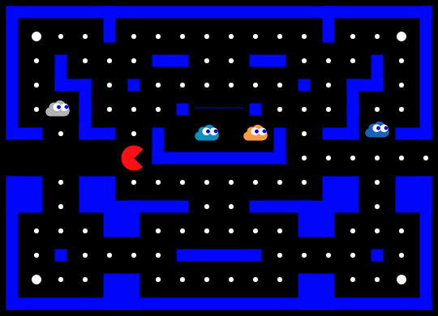
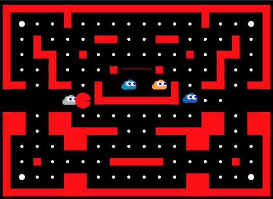
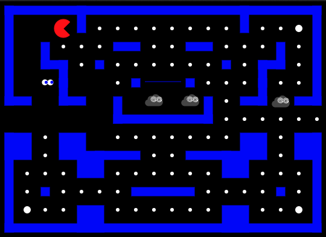

High scores
| Rank | Jugador | Cloud | Zona | Host | Puntaje |
|---|
| Rank | Jugador | Cloud | Zona | Host | Puntaje |
|---|
| ID | Cloud | Zona | Host | Puntaje | Nivel | Vidas | ET | Conteo TXN |
|---|
Use las flechas de su teclado o [W,A,S,D] para jugar en el juego.
Para pausar / resumir el juego presiona [SPACIO] o [ESC] o sólo haz clic en el área del juego.
Usa gestos de deslizamiento para jugar en el juego.
Alternativamente usa los Botones de Flechas para jugar en el juego.
Para pausar / resumir el juego, toca el area de juego una vez.
Las nubes son creaturas que intentarán cazarte y te matarán si te atrapan.
Cada nube tiene su propia estrategia para acecharte.
Este es el estado por defecto. Cuando las nubes están en modo disperso, ellas simplemente se irán a su esquina por defecto y se mantendrán ahí.
Luego de cierto tiempo las nubes cambian su ánimo y comenzarán a perseguirte. Esto es indicado cuando los muros se tornan rojos.
El objetivo de cada nivel es comer todas las píldoras sin ser atrapado por las nubes. Cada píldora equivale a 10 puntos.
En cada nivel existen 4 súper píldoras, las cuales son un poco más grandes que las normales. Si te comes una de éstas, serás lo suficientemente fuerte para comerte a las nubes. Puedes darte cuenta de esto cuando las nubes se tornan azul. Cada súper píldora equivale a 50 puntos.
Comerte una nube equivale a 100 puntos. El alma de la nube debe retornar a la casa de nubes antes de comenzar a perseguirte de nuevo.
Versión actual: 1.02.es (10.09.2021)
Cloud Hunter es Open Source y es un fork del proyecto Pac-Man, originalmente escrito por platzh1rsch y modificado por Ivan Font y esta versión en español por Tomás Gübeli. Puedes obtener el código original aquí o esta versón en español modificada aquí.
Si tienes alguna sugerencia para hacer esta aplicación mejor, favor crea un issue en el repo github.
Click para Jugar
This whole thing was written in HTML5, CSS3 and Javascript (using small bits of jquery). For the basics I was following the "Exploring HTML5 Canvas" Tutorials (Part 1 - 6) by Devhammer. Thanks for the great Tutorial!
For some other stuff, like how to write objectorientated javascript I was following the tutorials over at http://www.codecademy.com/, which is a really great site to learn Javascript and also other languages.